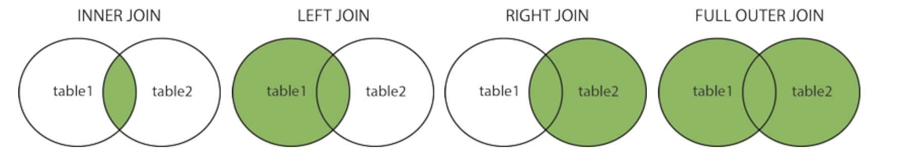

MySQL join 学习
文章目录
1. 数学基础：笛卡尔乘积
笛卡尔乘积是一个数学概念：
笛卡尔乘积是指在数学中，两个集合 X 和 Y 的笛卡尔积（Cartesian product），又称直积，表示为 X × Y，第一个对象是 X 的成员而第二个对象是 Y 的所有可能有序对的其中一个成员。公式表示就是如下：
|
|
案例：
|
|
2. join 的作用是什么？
join 是关系型数据库在关系二字上的集中体现，其作用在于将两张及以上表根据列中字段间的相关关系，将多表中的行融合在一起。
3. 不同的 join 类型的语义
| join 类型 | 语义 |
|---|---|
| cross join | Cross 即交叉，代表笛卡尔乘积中符号 ×，其也就是两表的笛卡尔乘积结果 |
| inner join | 语义上等效为从笛卡尔乘积中选出符合条件的交集记录 |
| left join | 语义上等效为从笛卡尔乘积中选出符合条件的交集记录+左表剩余的所有记录（不属于左表的字段会被置为 NULL） |
| right join | 语义上等效为从笛卡尔乘积中选出符合条件的交集记录+右表剩余的所有记录（不属于右表的字段会被置为 NULL） |
| full join | MySQL 并不支持 full join，不过可以等效为相同条件的 left join 与 right 的 union |
full join 补充说明，在 MySQL 中如下语句是一个典型的 Full join：
1 2 3select * from t1 left join t2 on t2.name = t1.name union select * from t1 right join t2 on t2.name = t1.name;
也可以用集合的语言来表示，如下图所示：

在 SQL 实际上又把 inner join 称为内连接，其余所有 join 类型都称为外连接。因此 join 有等效别名关键字：
-
inner join：join
显示(explicit) inner join 与隐式(implicit) inner join 性能上没有区别。
-
left join：left outer join
-
right join：right outer join
-
cross join：cross outer join
-
full join：full outer join
LEFT JOIN 和 RIGHT JOIN没什么差别，两者的结果差异取决于左右表的放置顺序。
4. 典型带有 join 的 SQL 语法分析
典型带有 join 的 SQL 语句如下所示：
|
|
我们按照 SQL 语句的执行顺序来对上述 SQL 语句进行说明：
注意事项：下面的说法仅仅从 MySQL 执行语义上进行说明，实际上 MySQL 在内存中不会建立 vt1、vt2、vt3 表。
-
FROM：MySQL 中 FROM 子句总是第一个被执行的，FROM 的作用是对 join 涉及的多个表进行笛卡尔乘积 vt1 表，结果有 m*n 行（m 为左表的行数，n 为右表的行数）；
-
ON：新建一张 vt2 表，并根据 ON 的条件筛选 vt1 表，符合条件的行加入到 vt2 中；
ON 只有对 Cross join 不是必须的。
-
JOIN：如果是 left join 或者 right join，那么就需要添加外部行，如果是 inner join 就不需要添加外部行。添加外部行以 left join 为例，首先遍历左表的每一行，其中不在 vt2 中的行会被添加到 vt2 中，不属于左表的字段会被置为 NULL，最终形成 vt3；
-
WHERE：对 vt3 表按照条件进行过滤，满足条件的行被输出到 vt4；
-
SELECT：从 vt4 中取出指定的字段到 vt5；
ON 与 WHERE 的区别是什么？
ON 与 WHERE 在使用 inner join 时，无论是在结果上还是在性能上都没有区别。
- 从结果上看，inner join 中无论条件写在 ON 还是 WHERE 后，结果相同。在使用 left/left join 时，结果有区别。例如，在 left join 中对 ON 后不符合条件的左表中的行还是会被纳入到结果中，但是却可以被 WHERE 后的条件过滤掉。
- 从效率的角度上看，虽然很多中文资源认为有所区别，但实际上没区别，可以参考：SQL JOIN - WHERE clause vs. ON clause，查询优化器会避免写法的不同导致执行效率的不同。
5. join 性能优化
5.1 join 可以跨库吗？
MySQL 可以利用 FEDERATED 引擎等方式实现跨库 join，但查询效率实际上并不高。通常认为 MySQL join 操作指的同数据库的多表 join。
5.2 join 内部执行过程与索引
在单表查询中，我们通常会强调两点：
- WHERE 后的字段是否可以走索引，如果不行，那么将直接走簇集索引，进行全表扫描，效率很差；
- SELECT 后的字段是否可以走覆盖索引，如果不行，那么则需要回表到簇集索引；
但在 join 多表问题中，索引不仅仅需要考虑上述两个问题。
MySQL 中的 join 操作并不会在内存中构造临时表，第四节中的说法只是方便从语义上进行理解。join 具体如何执行取决于查询优化器的选择。
MySQL 支持如下三种 join 操作（以两张表 join 为例）：
- nested loop join：利用嵌套 for 循环对两张表中的每一行数据进行两两比较。需要遍历第一张表 n 行，每一行都需要进行时间复杂度为 O(n) 的非索引查询，因此总的比较的时间复杂度为 O(n^2^)
- block nested loop join：对 nested loop join 的优化，利用对第一张表的行进行查询缓存，这样内层 for 循环中第二张表的每一条行数据一次性与第一张表的多条行数据进行比较，减少了对内表的比较次数。需要遍历第一张表 n 行，每 k 行都需要进行时间复杂度为 O(n) 的非索引查询，因此总的比较的时间复杂度为 O(n^2^/k)，k 为常数。
- index nested loop join：从第一张表读一行，然后在第二张表的索引中查找这个数据，索引是 B+ 树索引。需要遍历第一张表 n 行，每一行都需要进行时间复杂度为 O(logn) 的非索引查询，因此总的比较的时间复杂度为 O(nlogn)。
- batched key access join：其也是利用对外循环表的字段进行缓存，减少对内循环表的访问次数。比较次数得到一定减少，但是比较的时间复杂度还是为 O(nlogn/k)，k 为常数。
可见，join 操作的性能非常取决于第二张表是否基于索引进行查询。不过，为什么不要求第一张表也使用索引？
实际上，第一张表被称为驱动表，亦可称之为基表，MySQL 总是要遍历该表的所有行，每一行都去第二张表中进行匹配查询。遍历可以不建立索引，走簇集索引即可，而查询操作则需要依赖于二级索引。
那么，MySQL 如何决定将哪一张表作为驱动表呢？
MySQL 选择驱动表的原则是：在对最终结果集没影响的前提下，优先选择结果集最少的那张表作为驱动表。原因在于驱动表的行数决定了在非驱动表中进行查询的次数，驱动表行数越少，进行查询的次数越少。
如果是 left join，那么基表通常是 left join 左侧表，right join 的基表通常为 right join 右侧表。
因此，我们要非常注意非驱动表的索引，在 ON 以及 WHERE 后的字段都应该被索引覆盖。
5.3 join 与数据库范式
数据库范式有若干条[4]，定义偏于学术性，但核心思路是简洁明了的：数据库范式目的是使结构更合理，消除存储异常，使数据冗余尽量小，便于插入、删除和更新。
join 操作的原因就在于多表之间有关系并且多个表之间数据几乎没有冗余。
举一个例子，我们有三个表：
- student(id,name)
- class(id,description)
- student_class(student_id,class_id)
如果要查询一个学生对应的班级描述，那么就需要对上述三标进行 join，join 的性能问题可能会使我们产生担心。
为此，我们可以故意破坏范式，制造出一张存在冗余的“大表”：
- student_class_full(student_id, class_id, name, description)
你会发现，class 的 description 可能存储在两个表中（student_class_full 与 class），这不符合范式，并且为写操作带来了一致性问题以及写性能下降。另一方面，我们不再需要使用 join 来完成查询，读性能得到提高。
可见，在一些场景下，我们可以选择破坏数据库范式，避免使用 join 来提高读性能。代价是不同表之间出现的字段冗余、写性能下降，写操作出现多表间的一致性问题。
5.4 join 来代替子查询
join 比子查询在空间复杂度上要低，因此很多人建议利用 join 来代替子查询：
- 子查询：执行子查询时，MYSQL 需要创建临时表，查询完毕后再删除这些临时表，所以，子查询的速度会受到一定的影响，这里多了一个创建和销毁临时表的过程。
- join：正如 5.3 小节所述，join 走嵌套查询。小表驱动大表，通过索引字段进行关联。
6. 是否应当使用 join？
阿里巴巴在 Java 开发手册中建议[8]：超过三个表禁止 join。需要 join 的字段，数据类型保持绝对一致。
可见，阿里巴巴的意思是可以用 join，但是不要超过3张表。
（1）为什么 join 表的个数不能太多？
虽然我们可以利用索引来优化查询，但是如果是 k 张 n 行的数据库进行 join 查询，最坏的情况下时间复杂度为 O(n*(logn)^k-1^)，因此 join 表的数量应当得到控制。
例如，我们假设每一张表的行数为 1000,000 行，那么时间复杂度有：
| join 表的数量(k) | 时间复杂度 |
|---|---|
| 2 | 20*1000,000 |
| 3 | 400*1000,000 |
| 4 | 8000*1000,000 |
| k | O(n*(logn)^k-1^) |
（2）为什么可以使用 join？
很多场景下 join 是最优选择。例如两张表各有 10W 条数据，我们的确可以利用 service 层，分两步向两个数据库索要对应的行数据，然后在 service 层完成数据行的关联与过滤。但是 2*10 W 行数据有很大的网络传输压力，并且会对 service 层所在的服务器内存有一定压力。而 join 在 mysql server 处实际可能仅仅会得到 100 条符合要求的记录，那么对比起来，在 service 层的额外开销更难以接受。
当然，分库的 join 避免不了网络传输的额外开销（排除一机多库）。
SUMMARY
- 基于笛卡尔乘积，我们能够方便地从语义上理解 MySQL 各种 join 语义；
- 第 4 节从语义上说明了典型带有 join 的 SQL 语法的执行过程，但是注意其内部并不会建立多个虚拟表；
- 第 5 节分析了 join 操作的内部机制：join 基于小表驱动大表地进行嵌套查询，被驱动表是否能够走索引进行查询将决定整个 join 语句的执行效率；
- 第 6 节分析了 join 使用建议，并给出其时间复杂度模型，解释了阿里巴巴建议 join 表数量不应当超过 3 张的原因；